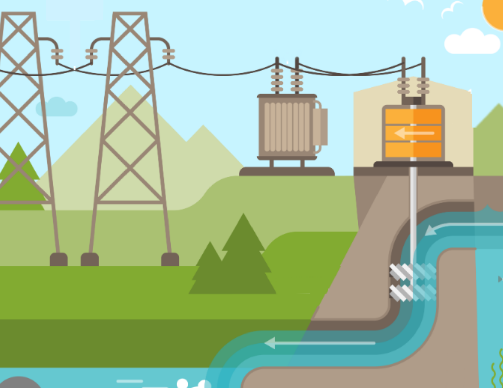

Bienvenido a la Transición Energética Justa
Descubre cómo las energías renovables están transformando nuestro futuro energético.
¿Qué es la energía hidráulica?
La energía hidráulica es una forma de energía renovable que se obtiene a partir del movimiento del agua. Los sistemas de generación de energía hidráulica aprovechan la fuerza del agua, ya sea de ríos, lagos o embalses, para mover turbinas y generar electricidad.
Ventajas de la energía hidráulica
- Es una fuente de energía renovable y sostenible.
- Tiene un bajo impacto ambiental en comparación con otras fuentes de energía.
- Es una tecnología madura y confiable con altos niveles de eficiencia.
- Puede proporcionar energía de forma estable y constante.
- Contribuye a la diversificación de la matriz energética.

Desafíos de la energía hidráulica
- Depende de la disponibilidad de recursos hídricos, lo que puede verse afectado por factores climáticos.
- Puede tener un impacto en los ecosistemas acuáticos y las comunidades locales.
- Requiere una inversión inicial alta para la construcción de las instalaciones.
- Puede enfrentar limitaciones geográficas y de infraestructura.